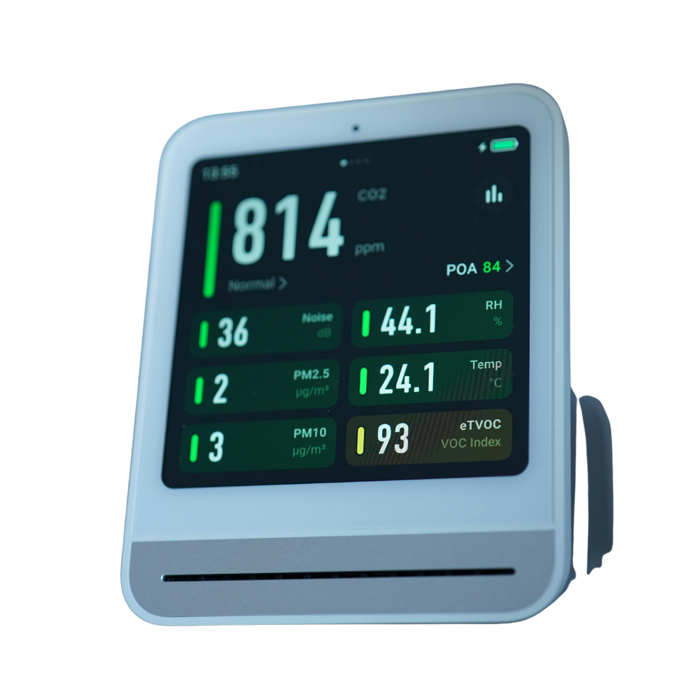
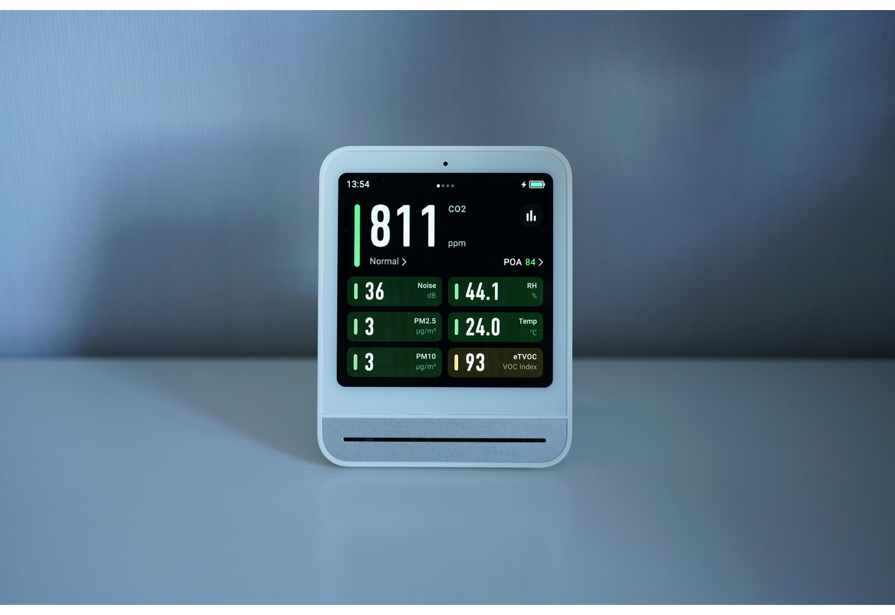

Wireless Weather Station
SkyWatch Model W55
A wireless home weather station designed to monitor indoor and outdoor temperature, relative humidity and rainfall through a clear indoor display.
- Measures indoor and outdoor temperature
- Monitors relative humidity and rainfall
- Provides readings through a wireless display
Home Weather Monitoring

SkyWatch Weather StationModel W55
Local conditions at a glance
Designed for straightforward home weather monitoring
ChronaField SkyWatch W55 is a wireless weather station designed to display indoor and outdoor temperature, relative humidity and rainfall information.
The weather station receives measurements from an outdoor temperature and humidity sensor and a separate rainfall sensor through a wireless connection with a maximum unobstructed transmission range of 100 metres.
SkyWatch W55 measures indoor temperature with a stated accuracy of ±0.5°C and outdoor temperature with a stated accuracy of ±1.0°C under the specified operating and testing conditions.
Product highlights
Practical monitoring for changing weather conditions
SkyWatch W55 combines temperature, humidity and rainfall measurements with wireless transmission and straightforward controls in a compact home weather station.
Indoor and outdoor temperature
The display presents separate indoor and outdoor temperature measurements so users can compare conditions at a glance.
Humidity monitoring
The station measures relative humidity from 20% to 95% for indoor and outdoor monitoring locations.
Rainfall measurement
The outdoor rainfall sensor records accumulated rainfall from 0 to 999.9 millimetres.
Wireless transmission
The outdoor sensors transmit readings to the indoor display from up to 100 metres away in unobstructed conditions.
Minimum and maximum records
The display stores minimum and maximum temperature and humidity readings for convenient review.

Designed for home use
Straightforward setup and monitoring
Position the indoor display in a dry interior location, mount the outdoor temperature and humidity sensor in a shaded and ventilated area, and place the rainfall sensor on a stable and level outdoor surface.
- Simple initial setup
Install the batteries, pair the outdoor sensors with the display and select the preferred measurement units.
- Clear weather readings
Review indoor and outdoor temperature, relative humidity and rainfall measurements from the central display.
- Routine sensor care
Keep the outdoor sensors clean, check the rainfall collector for debris and replace batteries when the low-battery indicator appears.
Temperature accuracy
Indoor accuracy of ±0.5°C
SkyWatch W55 measures indoor temperature with a stated accuracy of ±0.5°C and outdoor temperature with a stated accuracy of ±1.0°C when the sensors are installed and operated within their specified measurement ranges.
Indoor temperature accuracy±0.5°CWithin the specified range
Product details
Technical Specifications
Key product information for the ChronaField SkyWatch W55 wireless weather station.
| Product name | SkyWatch |
|---|---|
| Model | W55 |
| Product category | Wireless home weather station |
| Indoor temperature range | 0°C to 50°C |
| Outdoor temperature range | -40°C to 60°C |
| Indoor temperature accuracy | ±0.5°C |
| Outdoor temperature accuracy | ±1.0°C |
| Humidity range | 20% to 95% relative humidity |
| Rainfall range | 0 to 999.9 mm |
| Wireless range | Up to 100 m in unobstructed conditions |
| Display power | Three AA batteries or 5 V power adapter |
| Outdoor sensor power | Two AA batteries per sensor unit |
| Product code | CF-W55-2026 |
Getting started
How to use SkyWatch W55
Complete the following steps before and during normal operation.
- 1
Power the components
Install the required batteries in the outdoor sensors and connect the indoor display to its power adapter or install its batteries.
- 2
Position the sensors
Mount the temperature and humidity sensor in a shaded and ventilated location and place the rainfall sensor on a level outdoor surface.
- 3
Confirm the connection
Allow the display to detect the outdoor sensors and confirm that temperature, humidity and rainfall readings appear correctly.
- 4
Maintain the sensors
Remove debris from the rainfall collector, inspect the sensor housings and replace batteries when the low-battery indicator appears.
Important information
Safety and Storage
Follow these precautions when installing, cleaning or storing SkyWatch W55.
Important precautions
- Keep the indoor display in a dry interior environment.
- Do not immerse the display or outdoor sensors in water.
- Use only the specified battery types and power adapter.
- Do not use damaged sensors, cables or battery compartments.
Display and sensor care
- Wipe the display and sensor housings with a soft and lightly damp cloth.
- Remove leaves, dirt and other debris from the rainfall collector.
- Check outdoor mounting points after strong wind or severe weather.
- Replace depleted batteries with complete sets of matching batteries.
Keep the station in good condition
Remove the batteries, clean and dry each component, and store the weather station in a cool and dry indoor location protected from moisture, dust and physical damage.
Questions and Answers
Frequently Asked Questions
Find answers about SkyWatch W55, including temperature accuracy, measurement ranges, rainfall sensing, wireless transmission and routine maintenance.
Q How accurate is the SkyWatch W55 temperature reading?
A
SkyWatch W55 has a stated indoor temperature accuracy of ±0.5°C and a stated outdoor temperature accuracy of ±1.0°C within the specified measurement ranges.
Q What temperature ranges can SkyWatch W55 measure?
A
SkyWatch W55 measures indoor temperature from 0°C to 50°C and outdoor temperature from -40°C to 60°C.
Q Does SkyWatch W55 measure rainfall?
A
Yes, the separate rainfall sensor records accumulated rainfall from 0 to 999.9 millimetres.
Q What is the wireless range of SkyWatch W55?
A
The outdoor sensors have a maximum wireless transmission range of 100 metres in unobstructed conditions.
Q Where should the outdoor temperature sensor be installed?
A
Install the outdoor temperature sensor in a shaded and ventilated location away from direct sunlight, heating equipment, reflective walls and other local heat sources.
Q Who manufactures SkyWatch W55?
A
SkyWatch W55 is manufactured and distributed by ChronaField.